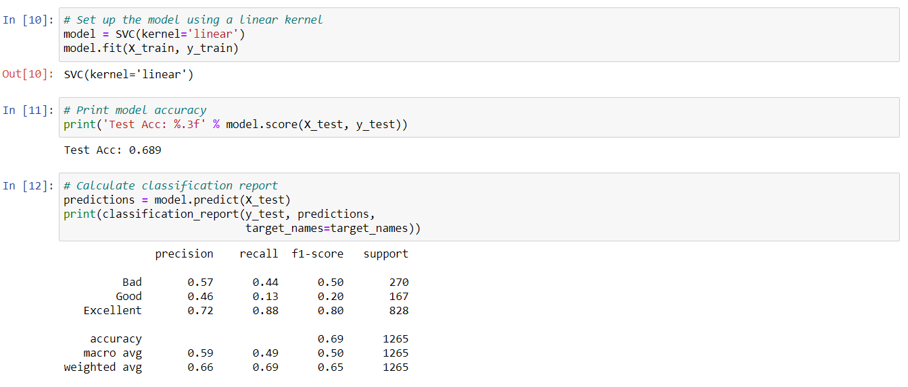

SVM Findings
What is SVM?
Support-vector machines (SVM) is a supervised machine learning algorithm useful to analyze data by separating data points into categories using an optimal hyperplane to ensure the largest margin of separation possible.

Why use an SVM?
SVM can be used in classification or regression analysis. SVM models are popular for their relatively high accuracy compared to other classification models such as logistic regression and decision trees.
Model Accuracy
Precision tells us what percentage of the times the model predicted Bad, Good, or Excellent and was correct. Our model was correct 57% of the time it predicted Bad, 46% of the time it predicted Good, and 72% of the time it predicted Excellent with the test data.
Recall tells us how many of the total of each class was correctly identified. Our model correctly identified 44% of the Bad movies, 46% of the Good movies, and 72% of the Excellent movies in the test data.
F1-score measures the harmonic mean of precision and recall. F1-Score ranges from 0 to 1 with 1 being the best result. Our F1-score model findings show this model is better at predicting Excellent movies than Good or Bad Movies.
Macro accuracy average measures the classifications individually then takes an average.
Weighted accuracy average takes the fraction of correct predictions in each classification divided by the total number of instances in that class.